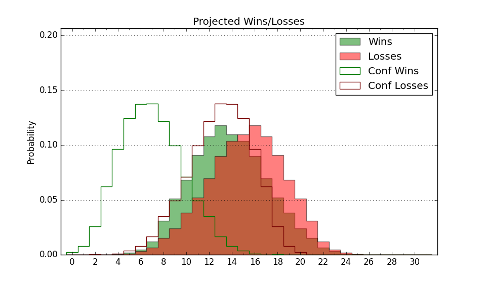

| Home | Game Probabilities | Conferences | Preseason Predictions | Odds Charts | NCAA Tournament |
| City: | Manhattan, Kansas | |
| Conference: | Big 12 (1st)
| |
| Record: | 0-0 (Conf) 2-0 (Overall) | |
| Ratings: | Comp.: 12.4 (69th) Net: -18.0 (305th) Off: 108.8 (137th) Def: 126.8 (349th) SoR: 12.6 (137th) |
| Remaining | ||||||
|---|---|---|---|---|---|---|
| Date | Opponent | Win Prob | Pred. | |||
| 11/14 | LSU (53) | 61.0% | W 74-71 | |||
| 11/19 | Mississippi Valley St. (364) | 98.7% | W 81-52 | |||
| 11/22 | (N) George Washington (111) | 68.0% | W 75-70 | |||
| 12/1 | Arkansas Pine Bluff (360) | 98.3% | W 92-63 | |||
| 12/7 | @ St. John's (42) | 26.2% | L 70-77 | |||
| 12/17 | (N) Drake (153) | 78.6% | W 75-66 | |||
| 12/21 | @ Wichita St. (98) | 50.5% | W 71-70 | |||
| 12/30 | Cincinnati (21) | 42.8% | L 68-70 | |||
| 1/4 | @ TCU (43) | 26.2% | L 68-76 | |||
| 1/7 | @ Oklahoma St. (79) | 39.0% | L 68-72 | |||
| 1/11 | Houston (1) | 12.0% | L 59-72 | |||
| 1/14 | Texas Tech (13) | 32.3% | L 70-75 | |||
| 1/18 | @ Kansas (10) | 10.3% | L 64-79 | |||
| 1/22 | @ Baylor (11) | 11.7% | L 67-81 | |||
| 1/25 | West Virginia (60) | 62.9% | W 76-72 | |||
| 1/29 | Oklahoma St. (79) | 68.5% | W 73-67 | |||
| 2/1 | @ Iowa St. (6) | 7.8% | L 58-75 | |||
| 2/4 | @ Arizona St. (64) | 34.5% | L 65-70 | |||
| 2/8 | Kansas (10) | 28.1% | L 68-75 | |||
| 2/11 | Arizona (4) | 19.9% | L 70-80 | |||
| 2/15 | @ BYU (40) | 25.5% | L 70-77 | |||
| 2/17 | @ Utah (84) | 42.6% | L 73-76 | |||
| 2/23 | Arizona St. (64) | 64.2% | W 69-65 | |||
| 2/26 | @ UCF (49) | 29.4% | L 66-72 | |||
| 3/2 | Colorado (85) | 72.1% | W 73-67 | |||
| 3/5 | @ Cincinnati (21) | 18.0% | L 64-75 | |||
| 3/8 | Iowa St. (6) | 22.4% | L 62-71 | |||
| Previous | Game Score | |||||
| Date | Opponent | Win Prob | Result | Off | Def | Net |
| 11/5 | New Orleans (358) | 98.0% | W 89-65 | 4.8 | -12.6 | -7.9 |
| 11/9 | Cleveland St. (311) | 95.8% | W 77-64 | -10.1 | -6.3 | -16.4 |
| Stats & Trends | |||||
|---|---|---|---|---|---|
| Current | Day | Week | Month | Season | |
| Composite | 12.4 | -0.9 | -3.2 | -3.3 | -3.3 |
| Comp Rank | 69 | -6 | -22 | -22 | -22 |
| Net Efficiency | -18.0 | -9.0 | -29.7 | -- | -- |
| Net Rank | 305 | -65 | -238 | -- | -- |
| Off Efficiency | 108.8 | -5.8 | -6.8 | -- | -- |
| Off Rank | 137 | -56 | -101 | -- | -- |
| Def Efficiency | 126.8 | -3.2 | -22.8 | -- | -- |
| Def Rank | 349 | -11 | -221 | -- | -- |
| SoS Rank | 358 | -6 | -93 | -- | -- |
| Exp. Wins | 13.8 | -0.4 | -1.7 | -1.8 | -1.8 |
| Exp. Conf Wins | 7.0 | -0.4 | -1.5 | -1.6 | -1.6 |
| Conf Champ Prob | 0.1 | -0.0 | -0.4 | -0.6 | -0.6 |

| Advanced Stats | ||
|---|---|---|
| Stat | Value | Rank |
| Off Eff FG % | 0.533 | 125 |
| Off Ast Ratio | 0.192 | 27 |
| Off ORB% | 0.393 | 35 |
| Off TO Rate | 0.142 | 141 |
| Off FT Ratio | 0.263 | 292 |
| Def Eff FG % | 0.539 | 264 |
| Def Ast Ratio | 0.161 | 263 |
| Def ORB% | 0.357 | 309 |
| Def TO Rate | 0.142 | 220 |
| Def FT Ratio | 0.212 | 30 |